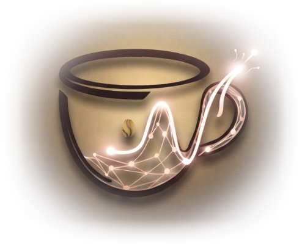

brewing since 2026 · Miskolc
CuppaShot
Kávé. Adat. Elemzés.
Pék Richárd vagyok, AI-alapú termékfejlesztő. Szoftvert, automatizációt és integrációt főzök – AI-ágensekkel, pontos recept szerint, minden adagot tesztelve.

01 Étlap
Mit főzök neked?
Négy alapital, mindegyik saját recepttel. A pörkölés foka a tapasztalatot jelzi.
02 Frissen pörkölt
Projektek a pörkölőből
AI-ágensekkel épített, működő rendszerek. Mindegyiknél én írtam a specifikációt, én osztottam ki a munkát, és méréssel fogadtam el az eredményt.
Pörkölés: 2026.04 – · Eredet: SaaS
MAGMA
Moduláris Alkalmazás és Gyakorlati Management Asszisztens
Projektek, feladatok, munkanapló, jegykezelés, értekezletek, hangulatmérés és riportok, bejelentkezéssel és jogosultságkezeléssel.
- Külön webes felület és API
- Saját szerveren, HTTPS-sel és adatbázis-mentéssel
Pörkölés: 2026.11 · Eredet: közös AI-memória
Borostyán
Tudásbázis és közös AI-memória
Elkészült – a kiadás előtti éles tesztelés zajlik.
Hivatkozott jegyzetek, lekérdezhető nézetek, táblák, gráf és forrásra hivatkozó AI-válaszok. Az ágensek jogosultságokkal olvasnak és írnak bele.
- 500-nál több automatikus teszt
- 81 MB memória (keret: 1 GB), 66 MB telepítés
Pörkölés: 2026.11 – · Eredet: helyi szerver
Kaptár
Többágenses AI-munkakörnyezet
Helyi webes rendszer, amelyben Claude, ChatGPT és Gemini ágensek szereposztással dolgoznak: az egyik tervez, a másik felülvizsgál, a tulajdonos jóváhagy.
- Feladatkezelés, kódfelülvizsgálat, visszakövethető napló
- Telefonról is elérhető, titkosított kapcsolaton
Pörkölés: 2026.07 – · Eredet: HR
KSK
Személyiség- és kompetenciakérdőív
Modulokba szervezett kérdésbank, amely feltárja a kitöltő személyiségét, kompetenciáit és motivációit, pozíciót ajánl, és PDF-értékelést készít.
- 17 modul, 4525 kérdés, 130 pontozott skála
- 3062 foglalkozásprofil FEOR-kóddal
03 A recept
Így készül egy shot
A jó kávé nem véletlen, és a jó szoftver sem. Minden projekt ugyanazon a négy lépésen megy át.
-
01
Őrlés
Specifikáció
Követelmények és elfogadási feltételek, mielőtt egyetlen sor kód születne.
~ 7 g · finomra őrölve -
02
Adagolás
AI-ágensek
A munkát szereposztással kiosztom Claude Code, Codex és Gemini között.
tamp · 15 kg nyomás -
03
Lefőzés
Ellenőrzés
Tesztek, mérés és kölcsönös bírálat: az ágensek egymás munkáját is átnézik.
25 s · 93 °C · 9 bar -
04
Tálalás
Verziókezelés és élesítés
Git, GitHub és pull request: minden változás visszakövethető.
git push · crema ✓
Pörkölési profil
04 Kapcsolat
Igyunk meg egy kávét.
Van egy ötleted, egy kézzel vitt folyamatod vagy egy Excel-tábla, ami már túl nagy? Beszéljük meg, akár egy virtuális kávé mellett.
$ cuppashot contact email pek.richard.munka@gmail.com youtube @cuppashot github github.com/PekRichie hely Miskolc és környéke munka távoli / hibrid állapot ● nyitott új együttműködésekre $